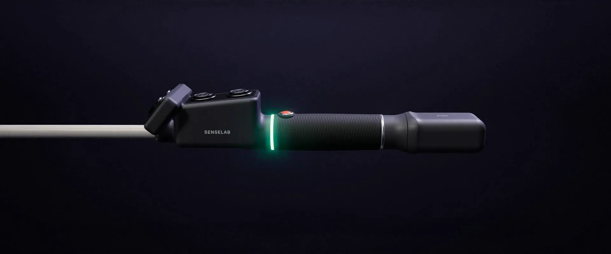
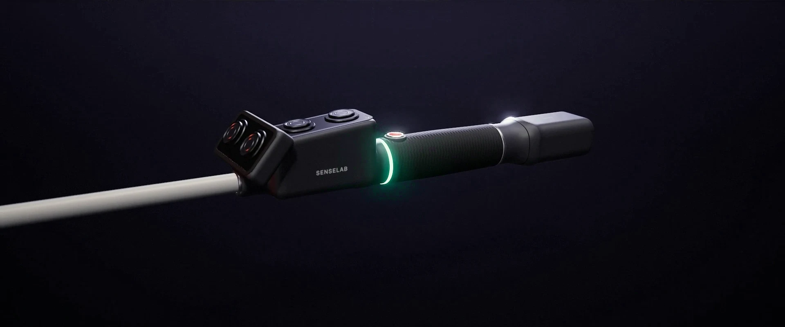
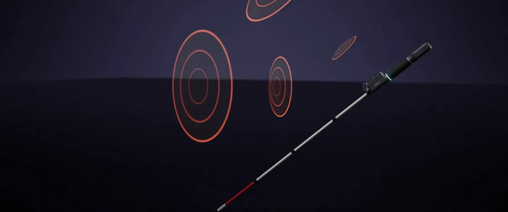
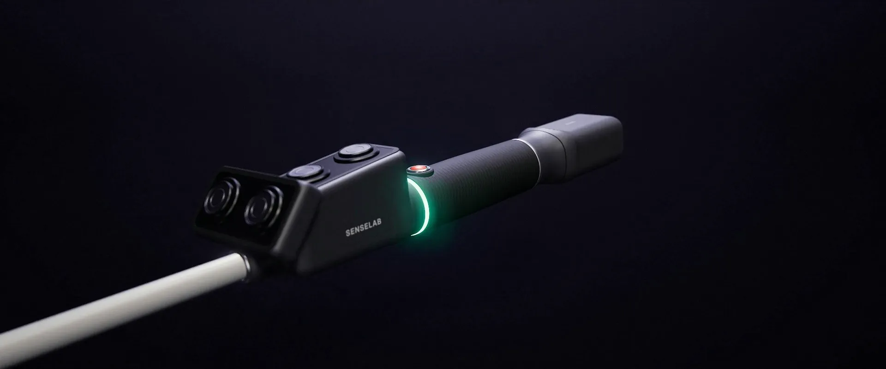

Linha reta em espaços abertos
Uma pressão no botão fixa a direção. Numa praça ou avenida, a pega indica para que lado corrigir.
A RUMO é a bengala branca que avisa, pela vibração na pega, do que está até 2,5 metros à sua frente e até 1,5 metros à altura da cabeça. Sem precisar de telemóvel.
Protótipo em desenvolvimento na Universidade de Aveiro
A segurança corre na própria pega. Se a bateria acabar, continua a ser uma bengala branca. Desligue o telemóvel e veja o que fica.

Ligado. O telemóvel acrescenta alertas, localização e voz.
A ponta continua a ler o chão. Os sensores tratam do resto, entre a cintura e a cabeça: ramos, placas, portas de camiões abertas.
O sítio diz o quê. O ritmo diz a que distância. Aproxime um obstáculo e siga o sinal de cada motor.
É o peso máximo que fixámos para a pega. Uma bengala varre de um lado para o outro o dia inteiro, e o peso fica onde não cansa o pulso.
O ESP32-S3 lê os sensores dez vezes por segundo e decide na pega. A meta é 0,3 segundos, no máximo, do obstáculo à primeira vibração.
Um olha em frente, o outro sobe cerca de 44°. O feixe largo foi escolhido para apanhar grades, postes e portas de vidro, e não é afetado pelo sol.
Polegar, indicador, palma e pontas dos dedos. Cada motor tem um só significado, para a mão perceber sem pensar.
À noite, a pega pousa na base e carrega por indução. Não há ficha para acertar. Também aceita USB-C.
Uma pressão no botão fixa a direção. Numa praça ou avenida, a pega indica para que lado corrigir.
Dois toques no botão e o telemóvel descreve em voz alta.
Se cair, apita até ser apanhada. Se ficar imóvel 45 segundos, pergunta se está tudo bem.

Projetada para IP54, de −10 a +45 °C, com uma caixa pensada para o uso de todos os dias na rua.

O SOS pede três segundos de pressão e dá cinco para cancelar, para evitar alertas por engano. Experimente: é só uma demonstração.
Abre em qualquer navegador. Só as pessoas que o utilizador convida veem alertas e localização.
Maqueta. O painel está em desenvolvimento.


Uma bengala branca completa, com toda a eletrónica numa pega leve e equilibrada. O nome diz ao que vem: ajudá-lo a manter o rumo.
Rode o modelo, escolha um ponto para saber o que faz ou mude para a vista interior para ver a eletrónica dentro da pega.
Sem som. As legendas do vídeo estão em inglês.
Um sensor aponta em frente, o outro para cima. O feixe largo foi escolhido para detetar grades, vedações e portas de vidro, e não é afetado pelo sol.
Como funciona →A bengala memoriza a direção e ajuda a mantê-la dentro de ±10°. Junto a estruturas metálicas que perturbam a bússola, suspende-se e avisa, em vez de guiar mal.
Projetada para IP54, contra chuva e pó, e para funcionar entre −10 e +45 °C, com uma caixa pensada para as pancadas do uso normal.
A RUMO está em fase de protótipo. Estes são os valores de projeto, que serão confirmados nos testes com utilizadores.
| Deteção à frente | Aviso a partir de 2,5 m (ajustável na app). Alcance do sensor de 0,2 a 4,5 m. |
|---|---|
| Deteção à altura da cabeça | Aviso a partir de 1,5 m (ajustável na app). |
| Tempo de resposta | No máximo 0,3 s entre o obstáculo entrar no alcance e a primeira vibração. |
| Feedback | 4 motores de vibração na pega e sinal sonoro. |
| Orientação | Sensor de movimento de 9 eixos com bússola. Bloqueio de rumo dentro de ±10°. |
| Ligação ao telemóvel | Bluetooth 5 Low Energy, encriptado. Android e iOS. |
| Bateria | Iões de lítio, 3350 mAh. Mais de 16 horas de utilização ativa por carga. |
| Carregamento | Base de indução incluída ou USB-C. Carga completa durante a noite (cerca de 9 h). |
| Resistência | IP54 (meta), contra salpicos e pó. Utilização entre −10 e +45 °C. |
| Peso da pega | 200 g, no máximo. |
| Acessibilidade | App desenhada para VoiceOver e TalkBack. Painel web segundo as WCAG 2.1 AA. |
Mantém a câmara virada para a frente, para pedir descrições do ambiente sem largar a bengala.
Os valores que a RUMO tem de atingir em bancada e com utilizadores. Ainda não são resultados.
Parede, poste, grade, vidro e ramo, 20 ensaios por distância
Corredor livre e zona aberta, 10 minutos
Depois de um treino de 30 minutos, no máximo
Em 90 % de uma caminhada de 30 metros
20 ensaios, do fim da contagem ao telemóvel
30 quedas, de alturas e ângulos diferentes
Avisos automáticos de passadeiras, degraus e portas, sem ser preciso pedir.
Novos motores que indicam direções intermédias, com menos consumo.
Compatibilidade com qualquer base de carregamento sem fios normalizada.
Mapas offline integrados com o bloqueio de rumo.


A RUMO foi pensada para se aprender numa sessão de meia hora. Sem ecrãs e sem menus: tudo passa pela mão.
A ponta da bengala continua a ler o chão, como sempre. Os dois sensores ultrassónicos da pega tratam do resto: um aponta em frente, o outro para cima, para a zona entre a cintura e a cabeça.
Preferimos ultrassons ao laser: o feixe largo foi escolhido para detetar grades, vedações e postes por onde um laser pode passar, e não depende da luz nem da transparência do vidro.
Ao caminhar, a bengala faz cerca de 40° com o chão. A pega foi desenhada a partir dessa posição: o sensor frontal fica na horizontal, a olhar em frente, e o sensor superior sobe cerca de 44°, no conceito atual, para apanhar o que está à altura do peito e da cabeça.
Assim, os dois feixes cobrem zonas diferentes e não se sobrepõem ao que a ponta da bengala já lê no chão.
Cada motor fica numa zona diferente da mão e tem um só significado. Se houver um obstáculo à frente e outro em cima, os pulsos alternam para nunca se confundirem.
| Motor | Onde se sente | O que significa |
|---|---|---|
| Frente | Dedo indicador | Obstáculo à frente |
| Cima | Polegar | Obstáculo à altura da cabeça |
| Esquerda | Palma da mão | Corrigir para a esquerda |
| Direita | Pontas dos dedos | Corrigir para a direita |
| Os quatro | Toda a pega | Avisos do sistema: ligação perdida, bateria fraca, contagem do SOS, «está tudo bem?» |
| Ritmo | À frente | Em cima |
|---|---|---|
| Sem vibração | Mais de 2,5 m | Mais de 1,5 m |
| 1 pulso por segundo | 2,5 a 1,5 m | 1,5 a 1,0 m |
| 2 a 3 por segundo | 1,5 a 0,8 m | 1,0 a 0,6 m |
| 5 por segundo | 0,8 a 0,4 m | 0,6 a 0,3 m |
| Contínua | Menos de 0,4 m | Menos de 0,3 m |
As distâncias e a intensidade ajustam-se na app. Os obstáculos têm sempre prioridade sobre as indicações de rumo.
À prova de água e debaixo do polegar. Os gestos podem ser trocados na app.
Por voz na app ou por número de pulsos
Pela câmara do telemóvel
Liga ou desliga
Contagem de 5 s que outro toque cancela
Qualquer toque para o sinal sonoro
O alerta parte do botão ou de uma possível queda: se a bengala ficar caída e imóvel durante 45 segundos, pergunta-lhe se está tudo bem. Sem resposta em 30 segundos, pede ajuda por si.
A bengala avisa a app, que envia o pedido de ajuda com a última localização conhecida.
de imediatoNotificação no telemóvel de cada cuidador e alerta no painel, com a posição no mapa.
em menos de 10 s, com dadosO primeiro a confirmar fica responsável. Os outros são informados e a app diz-lhe: «ajuda a caminho».
«Vou ajudar»A bengala faz soar a sirene para chamar quem está perto e o telemóvel propõe a chamada para o 112, a um toque.
rede de segurançaTodos os contactos são avisados ao mesmo tempo. É o modo de origem e é sempre usado no SOS manual.
Nas quedas, avisa um contacto de cada vez, pela ordem que escolher. Para quem prefere incomodar primeiro só uma pessoa próxima.
| Se acontecer isto | A RUMO faz isto |
|---|---|
| O telemóvel desliga-se ou fica longe | A deteção, a vibração e o bloqueio de rumo continuam a funcionar. A bengala avisa com três pulsos longos e os cuidadores são informados se a ligação não voltar. |
| SOS sem ligação ao telemóvel | A sirene da bengala toca para chamar quem está perto. O alerta fica guardado e é enviado assim que a ligação voltar. |
| Telemóvel sem dados móveis | O alerta fica em fila. No protótipo Android, segue também por SMS. Se ninguém confirmar a tempo, a bengala faz soar a sirene. |
| Perturbação magnética | O bloqueio de rumo suspende-se e avisa, em vez de dar indicações erradas. Retoma sozinho. |
| Sensor sem leitura | A bengala avisa com um padrão próprio e informa a app. |
| Bateria fraca | Aviso na pega e na app, com antecedência. Sem bateria, continua a ser uma bengala branca. |
| Pouca luz para a câmara | A app diz que a imagem está escura. Tudo o resto funciona normalmente. |
Quem usa a bengala tem uma app sem mapas nem ecrãs complicados, feita para leitor de ecrã. Quem cuida tem um painel web com a localização e os alertas.
Desenhada para se usar toda com VoiceOver e TalkBack. Não há mapa: a informação chega falada.
Dois toques na bengala e a câmara identifica pessoas, carros, cadeiras e texto. Funciona sem internet, com a app aberta, e junta a distância medida pela bengala.
Intensidade da vibração, distâncias de aviso, gestos do botão e contactos de emergência, tudo configurável.
Partilhada com os cuidadores de 5 em 5 minutos e em cada alerta. Pode pôr em pausa quando quiser.
Abre em qualquer navegador, sem instalar nada. Mostra a última localização de quem acompanha, recebe os alertas em tempo real e deixa confirmar quem vai ajudar.
Maqueta. A app e o painel estão em desenvolvimento.
Os contactos e o modo de alerta pertencem ao utilizador. O cuidador vê-os, mas só o utilizador os altera.
Localização, imagens e alertas são dados pessoais sensíveis. Tratamo-los com o mínimo indispensável e apenas com o seu consentimento.
O histórico de localização é apagado ao fim de um dia. Fica apenas a última posição conhecida.
As fotografias da descrição do ambiente são processadas no momento e descartadas.
Um cuidador só vê os seus dados depois de o utilizador o ligar na app. Cada alerta só é visível para quem foi avisado.
Os dados da aplicação ficam alojados na UE, ao abrigo do RGPD.
Entre a bengala e o telemóvel e entre o telemóvel e os servidores. Só o telemóvel emparelhado se liga à bengala.

A SenseLab desenvolve dispositivos eletrónicos de apoio para pessoas com deficiência visual, auditiva, motora ou cognitiva. Começámos pela mobilidade de quem é cego ou tem baixa visão.
É o passo seguinte do projeto. Ainda não há datas: avisamos quem se inscrever.
Pessoas cegas ou com baixa visão, cuidadores e técnicos de orientação e mobilidade.
Um treino de 30 minutos, no máximo, uma caminhada e tarefas na app com leitor de ecrã.
Escreva-nos. Associações e escolas podem organizar sessões para os seus membros.
Missão
Promover a segurança e a independência, integrando sensores inteligentes em objetos do dia a dia.
Visão
Um mundo em que a deficiência deixa de ser uma barreira à mobilidade livre e intuitiva.
Começámos por comunidades online de pessoas cegas e com baixa visão, e contactámos a ACAPO. Os testes com utilizadores são o passo seguinte.
Cada função tem de resolver um problema real sem criar um novo ponto de falha.
Uma bengala apanha chuva, sol e pancadas. Os nossos produtos também têm de aguentar.
A localização só é partilhada com quem o utilizador escolhe. Nunca é vendida.
Nas comunidades online, quem usa bengala falou-nos de pegas que cansam o pulso, de caixas que não aguentam a rua e de espaços abertos difíceis de atravessar. Por isso deixámos de fora tudo o que acrescentava peso sem acrescentar segurança, como o aquecimento das mãos ou a monitorização de saúde.
Rumo é a direção que se escolhe seguir. É isso que a nossa bengala protege: a liberdade de cada pessoa decidir para onde vai e de lá chegar pelos seus próprios meios.
Os arcos do nosso símbolo são ondas de deteção: a forma como os nossos produtos sentem o mundo à volta de quem os usa.
Somos treze, de Engenharia Eletrotécnica e de Computadores, na Universidade de Aveiro.


Respostas às perguntas mais comuns e as formas de falar connosco.
Não para o essencial. A deteção de obstáculos, a vibração, o bloqueio de rumo, o som para encontrar a bengala e a sirene funcionam sem telemóvel. O alerta aos contactos, a localização e a descrição do ambiente precisam da app. Se a ligação cair, a bengala avisa com três pulsos longos.
Foi desenhada para se aprender numa sessão de 30 minutos: quatro zonas de vibração e cinco gestos no botão.
Foi projetada para isso: IP54, contra salpicos e pó, é a meta, ainda por confirmar em ensaio. A entrada USB-C tem uma tampa de borracha. Não deve ser mergulhada em água.
A meta é mais de 16 horas de utilização ativa, a confirmar em ensaio. Quando não se mexe durante 5 minutos, a bengala adormece para poupar bateria e acorda sozinha quando lhe pega. A carga completa demora cerca de 9 horas, por isso recomendamos pousá-la na base todas as noites.
Nesta versão, o carregamento por indução funciona com a base incluída. Em alternativa, carrega com qualquer cabo USB-C. A compatibilidade com bases Qi está prevista para uma versão futura.
É preciso manter o botão premido durante 3 segundos e, depois disso, a bengala faz uma contagem de 5 segundos com vibração. Qualquer toque nesse intervalo cancela o pedido.
Apenas os contactos que escolher na app. Pode pôr a partilha de localização em pausa quando quiser, e o histórico é apagado ao fim de 24 horas.
Não. Complementa as técnicas da bengala branca. Recomendamos falar com um técnico de orientação e mobilidade antes de começar a usar.
A RUMO está em fase de protótipo e ainda não está à venda. Avisem-me do lançamento ou quero participar nos testes.
Usa bengala, cuida de alguém que usa ou representa uma instituição? Queremos ouvi-lo.
Como tratamos os seus dados, o que cobre a garantia e as regras de utilização dos nossos produtos e serviços.
Última atualização: novembro de 2026
A SenseLab trata dados pessoais de acordo com o Regulamento Geral sobre a Proteção de Dados (RGPD). Recolhemos apenas o necessário para o produto funcionar e nunca vendemos dados.
Para enviar alertas de emergência, mostrar a localização aos cuidadores autorizados e manter o serviço a funcionar. O consentimento é dado na app e pode ser retirado a qualquer momento.
Os dados da aplicação ficam em servidores na União Europeia. Alguns serviços de suporte, como a autenticação, as notificações e os mapas, são prestados por fornecedores globais ao abrigo de cláusulas contratuais-tipo da UE.
Pode pedir acesso, retificação, apagamento ou portabilidade dos seus dados, e opor-se ao seu tratamento, escrevendo para o nosso email de contacto. Pode também apresentar reclamação à Comissão Nacional de Proteção de Dados (CNPD).
Última atualização: novembro de 2026
A RUMO é uma ajuda à mobilidade que complementa as técnicas da bengala branca e o treino de orientação e mobilidade. Não substitui a atenção do utilizador nem os serviços de emergência.
A deteção por ultrassons pode falhar com obstáculos muito finos, superfícies que absorvem o som ou em condições extremas. O envio de alertas depende da bateria e da rede do telemóvel. Em situação de perigo imediato, ligue 112.
O utilizador é responsável por manter os contactos de emergência atualizados e por convidar apenas pessoas de confiança para ver a sua localização.
Aplicável quando a RUMO for vendida.
Última atualização: novembro de 2026
A RUMO tem a garantia legal de 3 anos prevista no Decreto-Lei n.º 84/2021 para bens vendidos a consumidores. Cobre defeitos de fabrico e não cobre danos por utilização indevida, submersão ou abertura da pega.
Nas compras à distância, tem 14 dias a contar da receção para devolver o produto sem indicar motivo, desde que esteja completo e em bom estado.
Contacte-nos por email com a descrição do problema. Respondemos com os passos seguintes e, se necessário, recolhemos o equipamento.
Última atualização: novembro de 2026
A RUMO é projetada segundo as normas europeias aplicáveis a equipamentos de rádio, substâncias perigosas e baterias de lítio. O protótipo atual ainda não tem certificação.
Última atualização: novembro de 2026
Este site e o painel de cuidadores são feitos segundo as WCAG 2.1, nível AA. A app está a ser desenhada para VoiceOver e TalkBack. Neste site pode aumentar o texto, alternar entre tema claro e escuro e pausar as animações. Todo o texto usa Atkinson Hyperlegible, uma letra desenhada para leitores com baixa visão.
Encontrou uma barreira? Diga-nos por email. Corrigimos o mais depressa possível.
Última atualização: novembro de 2026
Este site não usa cookies de publicidade nem de rastreio. Guardamos apenas, no seu navegador, as preferências de tamanho de texto, de tema e de animações que escolher.